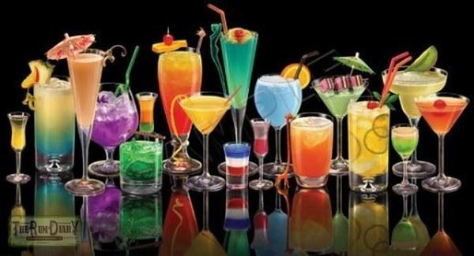

Игристые коктейли.

Игристые коктейли — это пенящиеся прохладительные напитки. Отличительная особенность их — значительное содержание шипучих компонентов: газированной, минеральной воды или шампанского.
Родина игристых коктейлей — Англия, но и у нас эти напитки приобрели популярность. По-английски они называются fizz (физ), что означает шипучий напиток.
Игристые коктейли следует подавать сильно охлажденными — на этом основано их освежающее действие, кроме того, холод обеспечивает длительную связь углекислоты с напитком, т. е. его «игристость». Поэтому игристые напитки подают в бокале со льдом и обязательно сразу после приготовления, так как «игра» довольно быстро прекращается и коктейли становятся безвкусными. По этой же причине после добавления газированных компонентов напитки не размешивают.
Шампанское для игристых коктейлей используют преимущественно сухое или полусухое, так как оно «играет» дольше, чем сладкое.
Желательно, чтобы при заполнении бокала газированной водой или шампанским образовалась «корона» из пены, придающая напитку особенно приятный вид. Иногда для этой цели используют сахарную пудру, которой в небольшом количестве посыпают напиток; пудра вступает в реакцию с водой, образуя пышную пену. Так поступают в том случае, когда минеральная или газированная вода недостаточно газирована.
Подают игристые коктейли обычно в высоких бокалах на тонкой ножке, в этих бокалах лучше смотрится «игра» пузырьков углекислого газа.
84. «Серебряный шар»
Водка 60 мл, лимонный сок 40 мл, сахарный сироп 10 мл, белок одного яйца, содовая или газированная вода 100 мл, лед.
Смешать все компоненты, кроме газированной воды, в шейкере со льдом, вылить в высокий конусный бокал, добавить содовую или газированную воду.
85. Водка с шампанским
Водка 40 мл, ром 10 мл, сахарный сироп 10 мл, лимонный сок 40 мл, ромовые вишни, шампанское сладкое или полусладкое 100 мл, 3–4 кубика льда.
Смешать все компоненты, кроме шампанского, в стакане со льдом, вылить в высокий фужер, положить в него ромовые вишни и добавить шампанское.
86. «Бим-бом»
Водка 20 мл, вишневый ликер 20 мл, лимонный сок 20 мл, шампанское или газированная вода 100 мл, апельсиновые и лимонные дольки, лед.
Все жидкие компоненты, кроме шампанского, смешивают в шейкере со льдом, выливают в широкий бокал, на дно которого кладут дольки апельсина и лимона, и доливают шампанское.
87. Шампанское с лимонным соком
Лимонный сок 20 мл, один кусочек сахара, шампанское 100 мл, половина кружка лимона, лед.
В высокий конусный бокал кладут лед, кусочек сахара, выливают лимонный сок и шампанское. Бокал украшают ломтиком лимона.
88. Коньяк с шампанским
Коньяк 40 мл, лимонный сок 10 мл, сахарный сироп 10 мл, сухое шампанское 100 мл, лед.
Коньяк, лимонный сок и сахарный сироп смешать в стакане со льдом, вылить в высокий бокал и добавить шампанское.
89. Коньяк с апельсиновым соком и шампанским
Коньяк 20 мл, ликер апельсиновый 20 мл, апельсиновый сок 20 мл, лимонный сок 10 мл, шампанское 80 мл, лед.
Приготовить так же, как коньяк с шампанским.
90. Апельсиновый
Водка 20 мл, апельсиновая настойка 20 мл, апельсиновый сок 20 мл, лимонный сок 20 мл, сахарная пудра, газированная вода 100 мл, лед.
Смешать все компоненты, кроме газированной воды, в стакане со льдом, вылить в высокий бокал, добавить газированную воду, затем напиток осторожно посыпать сахарной пудрой, чтобы коктейль, вспенившись, не перелился через край бокала.
91. Мятный
Водка 20 мл, мятный ликер 20 мл, лимонный сок 20 мл, сахарный сироп 10 г, газированная вода 100 мл, лед.
Приготовить так же, как коньяк с шампанским.
92. Гранатовый сок с шампанским
Коньяк 20 мл, гранатовый сок 20 мл, лимонный сок 40 мл, шампанское сладкое или полусладкое 60 мл, 2–3 кубика льда.
Смешать коньяк и соки в высоком конусном стакане со льдом и добавить шампанское.
93. Вишнево-малиновый
Вишневая настойка 40 мл, лимонный сок 40 мл, малиновый сироп 40 мл, газированная вода 100 мл, лед.
94. «Закат»
Вишневый сок 20 мл, лимонный сок 20 мл, шампанское сладкое или полусладкое 100 мл, «пьяные» вишни, кружок лимона, лед.
Вишневый и лимонный соки охладить в стакане со льдом, вылить в высокий бокал, положить в него вишни, украсить кружком лимона и добавить шампанское.
95. Сухое вино с апельсиновым соком
Сухое белое вино 80 мл, лимонный сок 10 мл, апельсиновый сок 40 мл, содовая или газированная вода 80 мл, лед.
Приготовить напиток в бокале со льдом.
96. Апельсиновый сок с шампанским
Апельсиновый сок 20 мл, сладкое или полусладкое шампанское 60 мл, содовая или газированная вода 70 мл, лед.
Смешать апельсиновый сок и шампанское в бокале со льдом и добавить газированную воду.
97. Кизиловый
Сухое белое вино 60 мл, кизиловый ликер 20 мл, лимонный сок 20 мл, сахарный сироп 20 мл, содовая или газированная вода 80 мл, лед.
Смешать все компоненты, кроме газированной воды, в высоком конусном бокале со льдом и добавить содовую или газированную воду.
98. Кислый
Лимонный сок 80 мл, сахарный сироп 20 мл, белый портвейн 30 мл, содовая или газированная вода 70 мл, лед.
Приготовить, как коктейль «Кизиловый».
99. «Крещатик»
Водка 30 мл, ликер «Шартрез» 20 мл, сок персиковый 10 мл, сухое шампанское 40 мл, персики 5 г, вишни 5 г.
Водку, ликер и сок смешать в шейкере со льдом, вылить в широкий бокал, долить шампанское и положить персики, нарезанные мелкими кубиками и целые вишни.
100. «Золотая осень»
Коньяк 20 мл, настойка «Золотая осень» 20 мл, шампанское сладкое или полусладкое 60 мл, «пьяные» вишни.
Приготовить, как коктейль «Крещатик».
101. Вишни в лимонном соке
Вишневый ликер 40 мл, лимонный сок 40 мл, сахарный сироп 10 мл, «пьяные» вишни, газированная вода 100 мл, лед.
Напиток приготовляют в высоком конусном бокале со льдом.
102. «Подснежник»
Апельсиновый ликер 20 мл, виноградный сок 20 мл, шампанское 150 мл, вишня, лед.
В конусный бокал со льдом вылить ликер и сок, а затем шампанское.
103. Сахарный
Коньяк 10 мл, апельсиновая настойка 10 мл, сладкое шампанское 80 мл, кусочек сахара, лед.
Обжечь на спиртовке или газовой горелке кусочек сахара, чтобы он приобрел темно-коричневый оттенок. Положить его в конусный бокал со льдом и влить все жидкие компоненты, налив шампанское в последнюю очередь.